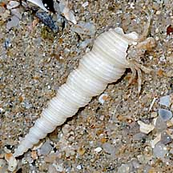
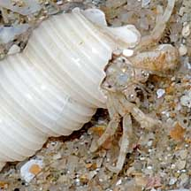
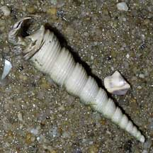

|
|
| shelled snails text index | photo index |
| Phylum Mollusca > Class Gastropoda > Family Volutidae |
| Turritella
snail Turritella terebra Family Turritellidae updated Sep 2020 Where seen? Only the empty shells have been seen on our shores so far. The living animal has yet to be encountered on the intertidal. The empty shells seen are usually occupied by a hermit crab. Elsewhere, they are found on soft bottoms. Features: Those seen 5-7cm, can grow to 15-17cm long. Elegant shell with regular spirals which are finely ridged. It is herbivorous and lives on sandy and muddy areas of the intertidal zone. |
 Changi, Oct 08 |
 |
 East Coast, Jun 06 |
| Human uses: In the northern Philippines,
they are regularly collected and marketed as food. Status and threats: Turritella terebra is listed as 'Vulnerable' in the Red List of threatened animals of Singapore. In the past it was abundant before its habitat was reclaimed. |
| Turritella snails on Singapore shores |
On wildsingapore
flickr
|
| Family
Turritellidae recorded for Singapore from Tan Siong Kiat and Henrietta P. M. Woo, 2010 Preliminary Checklist of The Molluscs of Singapore. in red are those listed among the threatened animals of Singapore from Davison, G.W. H. and P. K. L. Ng and Ho Hua Chew, 2008. The Singapore Red Data Book: Threatened plants and animals of Singapore.
|
|
Links
References
|